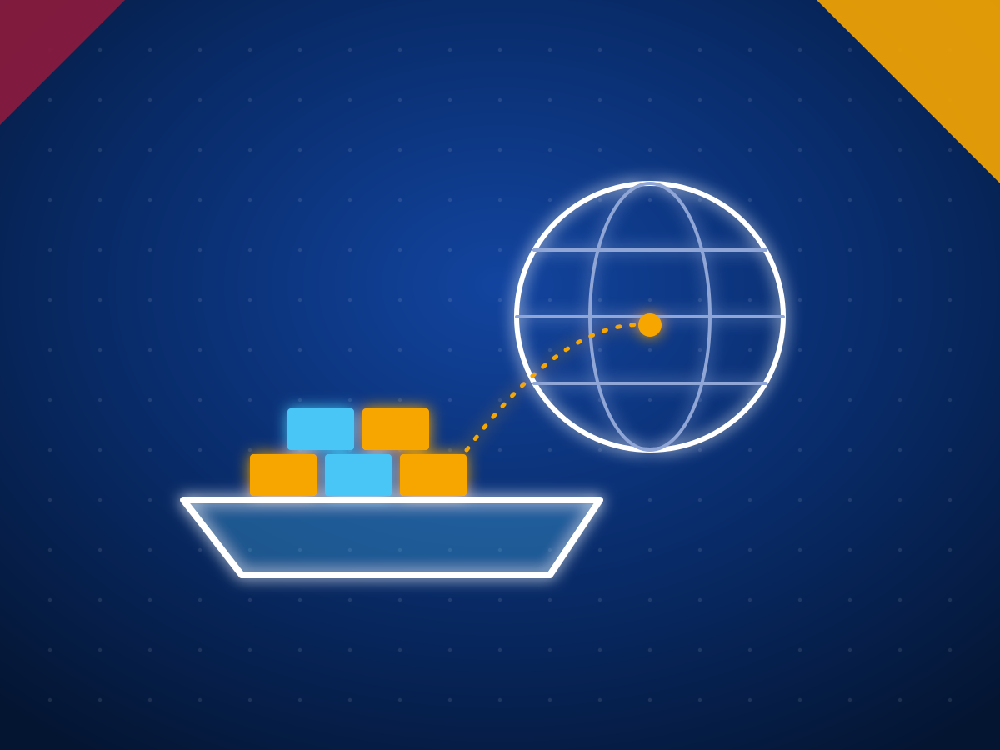

Win overseas buyers and tenders: services for Sri Lankan exporters
Overseas buyers look for suppliers through search, procurement portals and people they trust. We put Sri Lankan exporters in front of them in three ways: buyer requests that reach us through this site, international tenders matched to what you make, and help to win both.
Buyer requests
Buyers send us requests for Sri Lankan products through this site. We match each one to exporters who make the product and hold the certificates.
Join the networkTender Radar
International tenders matched to your products and markets, sent to your WhatsApp with a read on whether to bid.
See Tender RadarBid support
From the go or no go review to submission: compliance matrix, technical, commercial and document packs.
See bid supportExport consultancy
Market selection, vendor registration, certification roadmaps, agents and distributors.
See consultancy
Buyer facing marketing
A website, catalogue and LinkedIn presence a foreign procurement team will trust, and outreach to buyers in your target markets.
Talk to usCompany spotlight
A sourced feature on your company for the founders, buyers and investors who follow Tech Destination Sri Lanka.
Get featuredHow buyers find you through us
- Our category pages are written for the searches overseas buyers make, such as Ceylon cinnamon suppliers or coco peat blocks, and every page ends in a request for quote.
- Requests are matched by product, grade, certificates, market and capacity, so you only hear about buyers you can serve.
- We tell you about a request first and introduce you only if you want to quote. Quotes, samples and contracts are between you and the buyer.
Common questions
What does it take to join the network?
A registered Sri Lankan company that exports or is ready to export, the product details and certificates on the form, and a short call so we understand your capacity.
Will you share my details with buyers without asking?
No. We tell you about a buyer request first and introduce you only if you want to quote.
Do you work with small exporters?
Yes. Some buyer requests are for trial orders, and Tender Radar can be set to smaller contracts.
Do you only work with electrical and engineering exporters?
No. Buyer requests cover every category on this site. Tender Radar is strongest for electrical and engineering goods, uniforms, gloves, packaging and boats, where public buyers use tenders.